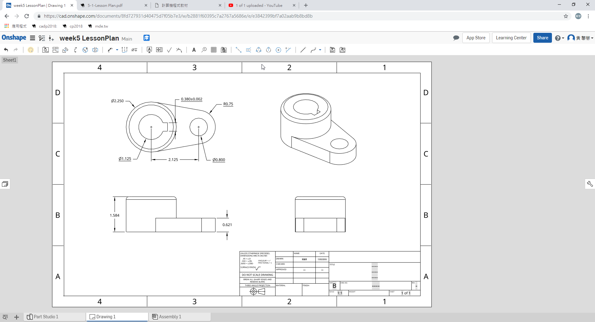

<!doctype html>
<html lang="en">
<head>
    <meta charset="utf-8">
<title>
2018 Fall 分組網際簡報
</title>
    <meta name="description" content="A framework for easily creating beautiful presentations using HTML">
    <meta name="author" content="Hakim El Hattab">
    
    <meta name="apple-mobile-web-app-capable" content="yes">
    <meta name="apple-mobile-web-app-status-bar-style" content="black-translucent">
    
    <meta name="viewport" content="width=device-width, initial-scale=1.0, maximum-scale=1.0, user-scalable=no">
    
    <link rel="stylesheet" href="css/reveal.css">
    <link rel="stylesheet" href="css/theme/black.css" id="theme">
    
    <!-- Theme used for syntax highlighting of code -->
    <link rel="stylesheet" href="lib/css/zenburn.css">

    <!-- Printing and PDF exports -->
    <script>
        var link = document.createElement( 'link' );
        link.rel = 'stylesheet';
        link.type = 'text/css';
        link.href = window.location.search.match( /print-pdf/gi ) ? 'css/print/pdf.css' : 'css/print/paper.css';
        document.getElementsByTagName( 'head' )[0].appendChild( link );
    </script>

    <!--[if lt IE 9]>
    <script src="lib/js/html5shiv.js"></script>
    <![endif]-->
</head>

<body>
<div class="reveal">
<!-- Any section element inside of this container is displayed as a slide -->
<div class="slides">
<section data-markdown>
    <script type="text/template">
## 2018Fall 分組網際簡報

### 虎科大機械設計工程系

<small>
Created by [KMOLab](http://lab.kmol.info/)
</small>

[2018 Fall 40623154網誌](./../blog/index.html)


    </script>
</section>


						
<section data-markdown>
    <script type="text/template">
# 投影片快捷鍵

* 利用箭頭上下前後換頁
* 按 f 鍵進入全螢幕模式 (full screen)
* 按 s 鍵可以顯示投影片筆記 (show)
* 按 o 鍵可以切換單張或全域檢視 (overview)
* 按 b 或 . 鍵可以切換螢幕黑屏 (black)
* 按 Esc 可以退出全螢幕或全域檢視 (Escape)

    </script>
</section>


						
<section>
<section data-markdown>
    <script type="text/template">
<!-- 請注意, @others 不可以內縮 -->
# 數學符號與方程式

Inline math equations go in like so: $\omega = d\phi / dt$. Display
math should get its own line and be put in in double-dollarsigns:

$$I = \int \rho R^{2} dV$$
    </script>
</section>


						
<section data-markdown>
    <script type="text/template">
<!-- 請注意, @others 不可以內縮 -->
## 利用 Markdown 寫投影片
以下利用 Markdown 格式展示 Python 程式碼:
```
# use threading and subprocess to threading the make process
import os
import subprocess
import threading

def domake():
    
    path = "../exposed/api/exposed"
    ubuntu = "../Ubuntu"
    
    # create obj path
    
    if not os.path.exists(path+"/../obj"):
        os.makedirs(path+"/../obj")
    
    subprocess.call(["make", "clean"], cwd=path)
    subprocess.call("make", cwd=path)
    subprocess.call(["cp", "{libslvs.so, _slvs.so, slvs.py}", ubuntu], cwd=path)
    subprocess.call(["python3", "circle_ex.py"], cwd=path+"/"+ubuntu)
    
make = threading.Thread(target=domake)
make.start()
```
    </script>
</section>


						
<section data-markdown>
    <script type="text/template">
## 使用 iframe 導入影片

### 導入影片 template

<iframe src="https://player.vimeo.com/video/183950627" width="640" height="492" frameborder="0" webkitallowfullscreen mozallowfullscreen allowfullscreen></iframe>
    </script>
</section>


						
</section>

<section>
<section data-markdown>
    <script type="text/template">
<!-- 請注意, @others 不可以內縮 -->
### 管理個人的期中作業網頁內容

* 登入github連結至 https://classroom.github.com 領取個人期中作業
* 把倉儲git clone到近端
* 進入倉儲, 先git branch確認分支, 利用git checkout把內定的master分支切換到gh-pages分支, 再用git branch檢查

    </script>
</section>


						
<section data-markdown>
    <script type="text/template">
<!-- 請注意, @others 不可以內縮 -->

* 在近端啟動倉儲python wsgi.py顯示埠號為https://127.0.0.1=8443啟動 CMSimfly 動態網站, 以內定的admin管理者密碼來修改維護.
* 若要轉成靜態, 點選generate-pages
* 要提交推送遠端, 利用SciTE執行site倉儲中的http-server.py, 在近端以 https://localhost:8444 檢查靜態網頁的內容
* 靜態網頁確認後, 再利用git add, git commit, git push 將內容推到遠端

    </script>
</section>


						
</section>

<section>
<section data-markdown>
    <script type="text/template">
<!-- 請注意, @others 不可以內縮 -->
### 開啟部落格論壇

* 利用leo開啟pelican.leo
* 因為遠端牽涉到連結,在設定/遠端/@edit publishconf.py修改SITEURL='https://mdecadp2018.github.io/site-40623154/blog' 以及修改課程名稱DISQUS_SITENAME = "mdecadp2018"

    </script>
</section>


						
</section>

<section>
<section data-markdown>
    <script type="text/template">
<!-- 請注意, @others 不可以內縮 -->
### 學習如何使用onshape

* Creat Document→Document name
* Sketch新建草圖
* 建立完草圖後, Extrude擠出Blind輸入尺寸
* 若要對稱雙向擠出選擇Symmetric
* 除料選擇Remove Blind輸入尺寸, 若要貫穿除料選擇Through All
* Isometric 完成零件
    </script>
</section>


						
</section>

<section>
<section data-markdown>
    <script type="text/template">
<!-- 請注意, @others 不可以內縮 -->
### 學習onshape基本用法

* navigating 瀏覽
* sketch 草圖
* extrude 擠出
* revolve 旋轉
* sweep 掃描
* loaf 和斷面混成
* shell 薄殼
* isometric 等角視
* construction 建構線
* keyboard shotcuts 鍵盤快捷鍵
    </script>
</section>


						
</section>

<section>
<section data-markdown>
    <script type="text/template">
<!-- 請注意, @others 不可以內縮 -->
### 學習Onshape基本用法

* entity 獨自存在實體
* precise 精確的
* dip 傾斜
* primarily 首先
* intent 目的
* enclose 圍住
* purposeful 有目的的
    </script>
</section>


						
</section>

<section>
<section data-markdown>
    <script type="text/template">
<!-- 請注意, @others 不可以內縮 -->
### 動態網頁使用過程出現問題之處理方法

* 使用CMsimfly過程中, 因為程式功能不足所以會遇到無法解讀config/content.htm, 應更新程式碼或者回報問題流程
*  1. 更新程式碼
 * 啟動https://localhost8443動態網頁
 * 資料放在config/content.htm
 *  網頁出問題時可能是程式功能不足系統無法解決問題, 所以要更新版本
    </script>
</section>


						
<section data-markdown>
    <script type="text/template">
<!-- 請注意, @others 不可以內縮 -->

 * 升級flaskapp.py試著用同樣程式處理
 * 升級時記得content.htm要停留在某一個版本
 * 2. 回報問題
 * 依以上程序操作, 如果還是無法解決問題, 從課程issues回報問題

    </script>
</section>


						
</section>

<section>
<section data-markdown>
    <script type="text/template">
<!-- 請注意, @others 不可以內縮 -->
### 如何更改網路設置

* 控制台→網路與網際網路→乙太網路2→變更介面卡選項→內容→網際網路通訊協定第四版(IPv4) : 140.130.17.3/140.130.1.2 
* 網際網路通訊協定第六版(IPv6) :
   2001:288:6004:17::3 系
   2001:288:6004:1::2   校 
   2001:6000:168::1      hinet

    </script>
</section>


						
</section>

<section>
<section data-markdown>
    <script type="text/template">
<!-- 請注意, @others 不可以內縮 -->
### 學習Onshape基本用法

* 如何使用工程圖
* 做擺圖, 標尺寸, 公差, 註解等等
* 設計零件的排版格式

</img>

    </script>
</section>


						
</section>

</div>

</div>

<script src="lib/js/head.min.js"></script>
<script src="js/reveal.js"></script>
<script>
        // More info https://github.com/hakimel/reveal.js#configuration
        Reveal.initialize({
            controls: true,
            progress: true,
            history: true,
            center: true,

            transition: 'slide', // none/fade/slide/convex/concave/zoom

            // More info https://github.com/hakimel/reveal.js#dependencies
            dependencies: [
                { src: 'lib/js/classList.js', condition: function() { return !document.body.classList; } },
                { src: 'plugin/markdown/marked.js', condition: function() { return !!document.querySelector( '[data-markdown]' ); } },
                { src: 'plugin/markdown/markdown.js', condition: function() { return !!document.querySelector( '[data-markdown]' ); } },
                { src: 'plugin/highlight/highlight.js', async: true, callback: function() { hljs.initHighlightingOnLoad(); } },
                { src: 'plugin/zoom-js/zoom.js', async: true },
                { src: 'plugin/notes/notes.js', async: true },
                { src: 'plugin/math/math.js', async: true }
            ]
        });
</script>
</body>

</html>

